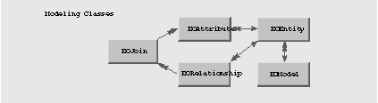

Enterprise Objects Framework Release 1.1 Copyright ©1995 by NeXT Computer, Inc. All Rights Reserved.
| 11 |
Exploring and Constructing Models
| A model defines the mapping between the schema of the database and the enterprise objects that make up your application. Models are typically created with EOModeler; most applications don't need to know anything about the contents of a model beyond what is covered there. Some applications, however, need to do more with models. This chapter shows you how to write code that can explore and construct model objects.
You need to work with models programmatically if you're writing applications: |
| Whose operation varies depending on the structure of the database. | ||
| That need to verify that the model is accurate with respect to the structure of the database. | ||
| That need to be able to construct their own models. | ||
| That work with database schemas or model files. |
| This chapter is organized into the following sections: |
| "The Contents of a Model." discusses the basic structure of a model. | ||
| "Exploring a Model." presents a sample program that displays the elements that make up a model. | ||
| "Building a Model from a Database Server's Data Dictionary." shows you how to extract model information from a data dictionary and build a model from that information (the techniques presented in this section can also be used when writing applications that verify the contents of a model file). | ||
| "Constructing a Model Programmatically." explains how to construct a model from scratch. |
| This chapter assumes that you've read Chapter 5, "Using EOModeler." It doesn't assume that you know anything about connecting to the database, or how to fetch or update data. |
| The Contents of a Model |
| Models are made up of entities, attributes, relationships, and joins. Entity objects consist of attribute and relationship objects. Relationship objects, in turn, contain join objects that identify the entities and attributes that are linked by the relationship. These classes, and the connections between them, are illustrated in Figure 54. Note that although a double-headed arrow is used in Figure 54 to show the connection between EOJoin and EOAttribute objects, each EOJoin is linked to exactly two EOAttributes. |
|  |
| Figure 54. The Modeling Classes
The following table describes the database-to-object mapping provided in a model: |
| Database Element | Class | |
| Data Dictionary | EOModel | |
| Table | EOEntity | |
| Column | EOAttribute | |
| Row | Enterprise object class (or EOGenericRecord, if a custom enterprise object class isn't specified) |
| While the modeling classes correspond to elements in the physical database, a model represents a level of abstraction above the database. Consequently, the mapping between modeling classes and database components doesn't have to be one-to-one. So, for example, while an EOEntity object described in a model file corresponds to a database table, in reality it can contain references to multiple tables (using flattened properties). In that sense, it's actually more analogous to a database view. Similarly, an EOAttribute can either correspond directly to a column in the root entity, or it can be derived or flattened. A derived attribute typically has no corresponding database column, while a flattened attribute is added to one entity from another entity.
For more information on EOModel, EOEntity, EOAttribute, EORelationship, and EOJoin objects, see their respective class specifications in the Enterprise Objects Framework Reference. |
| Exploring a Model |
| You can programmatically extract information from a model about its contents. This is useful, for instance, if your code needs to dynamically construct SQL queries based on the structure of the data in the database (for more information on sending SQL directly to the database, see Chapter 10, "Working Across Levels"). Or, if you're writing tools that work with the model itself, or tools that work with the database using the model as a guide, you need to be able to programmatically explore the contents of the model.
To illustrate how to explore a model programmatically, the following program walks through a model file and lists the model's entities, along with each entity's attributes and relationships: |
 EOModel *model;
EOModel *model;
 NSArray *modelEntities;
NSArray *modelEntities;
 EOEntity *anEntity;
EOEntity *anEntity;
 NSArray *entityAttributes;
NSArray *entityAttributes;
 EOAttribute *anAttribute;
EOAttribute *anAttribute;
 NSArray *entityRelationships;
NSArray *entityRelationships;
 EORelationship *aRelationship;
EORelationship *aRelationship;
 NSArray *relationshipJoins;
NSArray *relationshipJoins;
 EOJoin *aJoin;
EOJoin *aJoin;
 NSDictionary *myConnectionInfo;
NSDictionary *myConnectionInfo;
 NSEnumerator *entityEnum;
NSEnumerator *entityEnum;
 NSEnumerator *attributeEnum;
NSEnumerator *attributeEnum;
 NSEnumerator *relationshipEnum;
NSEnumerator *relationshipEnum;
 NSEnumerator *joinEnum;
NSEnumerator *joinEnum;
 model = [[EOModel alloc] initWithContentsOfFile:
model = [[EOModel alloc] initWithContentsOfFile:
 [EOModel findPathForModelNamed:@"People"]];
[EOModel findPathForModelNamed:@"People"]];
 /* Display the name of the database. */
/* Display the name of the database. */
 myConnectionInfo = [model connectionDictionary];
myConnectionInfo = [model connectionDictionary];
 NSLog(@"Database: %@\n",
NSLog(@"Database: %@\n",
 [myConnectionInfo objectForKey:@"databaseName"]);
[myConnectionInfo objectForKey:@"databaseName"]);
 /* Walk through the model's entities, processing each one. */
/* Walk through the model's entities, processing each one. */
 modelEntities = [model entities];
modelEntities = [model entities];
 entityEnum = [modelEntities objectEnumerator];
entityEnum = [modelEntities objectEnumerator];
 while (anEntity = [entityEnum nextObject]) {
while (anEntity = [entityEnum nextObject]) {
 /* Display the name of the entity. */
/* Display the name of the entity. */
 NSLog(@"%@\n", [anEntity name]);
NSLog(@"%@\n", [anEntity name]);
 /* Walk through the entity's attributes, displaying the name of */
/* Walk through the entity's attributes, displaying the name of */
 /* each attribute. */
/* each attribute. */
 NSLog(@" Attributes:\n");
NSLog(@" Attributes:\n");
 entityAttributes = [anEntity attributes];
entityAttributes = [anEntity attributes];
 attributeEnum = [entityAttributes objectEnumerator];
attributeEnum = [entityAttributes objectEnumerator];
 while (anAttribute = [attributeEnum nextObject]) {
while (anAttribute = [attributeEnum nextObject]) {
 NSLog(@" %@\n", [anAttribute name]);
NSLog(@" %@\n", [anAttribute name]);
 }
}
 /* Walk through the entity's relationships, and process them. */
/* Walk through the entity's relationships, and process them. */
 NSLog(@" Relationships:\n");
NSLog(@" Relationships:\n");
 entityRelationships = [anEntity relationships];
entityRelationships = [anEntity relationships];
 relationshipEnum = [entityRelationships objectEnumerator];
relationshipEnum = [entityRelationships objectEnumerator];
 while (aRelationship = [relationshipEnum nextObject]) {
while (aRelationship = [relationshipEnum nextObject]) {
 /* Display the name of the relationship. */
/* Display the name of the relationship. */
 NSLog(@" %@\n", [aRelationship name]);
NSLog(@" %@\n", [aRelationship name]);
 /* For each relationship, display the joins that make */
/* For each relationship, display the joins that make */
 /* up the relationship. */
/* up the relationship. */
 relationshipJoins = [aRelationship joins];
relationshipJoins = [aRelationship joins];
 joinEnum = [relationshipJoins objectEnumerator];
joinEnum = [relationshipJoins objectEnumerator];
 while (aJoin = [joinEnum nextObject]) {
while (aJoin = [joinEnum nextObject]) {
 /* Display the name of the join's source attribute. */
/* Display the name of the join's source attribute. */
 NSLog(@" Key: %@\n",
NSLog(@" Key: %@\n",
 [[aJoin sourceAttribute] name]);
[[aJoin sourceAttribute] name]);
 /* Display the name of the destination entity for the */
/* Display the name of the destination entity for the */
 /* relationship. */
/* relationship. */
 NSLog(@" To Entity: %@\n",
NSLog(@" To Entity: %@\n",
 [[[aJoin destinationAttribute] entity] name]);
[[[aJoin destinationAttribute] entity] name]);
 }
}
 }
}
 }
}
| The above code begins by creating a model object and initializing it from a model file. It then displays the name of the database to which the model applies (using Foundation's NSLog() function, to keep things simple). Note that this particular example only works for a Sybase database; the databaseName connection dictionary key isn't supported by the Oracle adaptors (for a list of the dictionary keys used to store connection information for the various adaptors, see "The Connection Dictionary" in Chapter 7, "Connecting to the Database."
Once the model object is created and filled, the code runs through the model's list of entities. For each entity, it displays the name of the entity, and then enumerates the entity's attributes and its relationships, displaying their names. For each relationship, it also lists the relationship's joins, displaying the name of the attribute that represents the source key for the join and the name of the destination entity of the relationship. The following is a portion of the output generated by the above program (after removing the time stamps and process IDs generated by NSLog()): |
 Database: PEOPLE
Database: PEOPLE
 Department
Department
 Attributes:
Attributes:
 departmentName
departmentName
 deptID
deptID
 locationID
locationID
 Relationships:
Relationships:
 toFacility
toFacility
 Key: locationID
Key: locationID
 To Entity: Facility
To Entity: Facility
 Employee
Employee
 Attributes:
Attributes:
 address
address
 city
city
 deptID
deptID
 empID
empID
| Building a Model from a Database Server's Data Dictionary |
| EOAdaptorChannel provides a number of methods you can use to read the contents of a database server's data dictionary. The information thus obtained can then be used either to construct a model or to verify that an existing model is synchronized with the contents of the database server's data dictionary.
The methods you use to read this information for either of these purposes are: |
| describeEntities describeAttributesForEntity: describeRelationshipsForEntity: readTypesForEntity: readTypeForAttribute: |
| The Sybase and Oracle adaptors don't provide methods for extracting primary key information from the database. Thus, unless your code supplies it, your model won't have any primary key information set for its entities. Without primary key information, your application can't read from or write to the database.
To programmatically construct a model based on information found in a database server's data dictionary, follow these basic steps: |
| 1. | Construct a minimal model, consisting of the database connection information and the name of the adaptor that is to be used to connect to your database. For information on connection dictionaries, see "The Connection Dictionary" in Chapter 7, "Connecting to the Database." | |
| 2. | Open a channel (see Chapter 7, "Connecting to the Database" for more information). | |
| 3. | Use describeEntities to obtain a list of entities available from the channel. | |
| 4. | Enumerate through the list of entities, adding those entities to the model that are relevant to your application. As they are added, extract each entity's attributes and relationships from the data dictionary. | |
| 5. | Set each entity's primary key. |
| The following code excerpt shows how to implement the first two steps for a Sybase database, given a connection dictionary: |
 NSDictionary *myConnectionInfo; /* Assume this exists. */
NSDictionary *myConnectionInfo; /* Assume this exists. */
 EOModel *myModel;
EOModel *myModel;
 EOAdaptor *myAdaptor;
EOAdaptor *myAdaptor;
 EOAdaptorContext *myAdaptorContext;
EOAdaptorContext *myAdaptorContext;
 EOAdaptorChannel *myChannel;
EOAdaptorChannel *myChannel;
 /* Build a minimal model for a Sybase database. */
/* Build a minimal model for a Sybase database. */
 myModel = [[EOModel alloc] initWithName:@"MyModel"];
myModel = [[EOModel alloc] initWithName:@"MyModel"];
 [myModel setConnectionDictionary:myConnectionInfo];
[myModel setConnectionDictionary:myConnectionInfo];
 [myModel setAdaptorName:@"Sybase"];
[myModel setAdaptorName:@"Sybase"];
 /* Open a channel to the database. */
/* Open a channel to the database. */
 myAdaptor = [EOAdaptor adaptorWithModel:myModel];
myAdaptor = [EOAdaptor adaptorWithModel:myModel];
 myAdaptorContext = [myAdaptor createAdaptorContext];
myAdaptorContext = [myAdaptor createAdaptorContext];
 myChannel = [[myAdaptorContext createAdaptorChannel] retain];
myChannel = [[myAdaptorContext createAdaptorChannel] retain];
 [myChannel openChannel];
[myChannel openChannel];
| The following code shows the implementation of steps 3 and 4, filling in the model and fleshing out each entity: |
 NSArray *allEntities;
NSArray *allEntities;
 EOEntity *anEntity;
EOEntity *anEntity;
 NSArray *properties;
NSArray *properties;
 EOAttribute *anAttribute;
EOAttribute *anAttribute;
 EORelationship *aRelationship;
EORelationship *aRelationship;
 NSEnumerator *entityEnum;
NSEnumerator *entityEnum;
 NSEnumerator *propEnum;
NSEnumerator *propEnum;
 /* Get a list of all of the available entities in the database. */
/* Get a list of all of the available entities in the database. */
 allEntities = [myChannel describeEntities];
allEntities = [myChannel describeEntities];
 /* Add each entity to the database. */
/* Add each entity to the database. */
 entityEnum = [allEntities objectEnumerator];
entityEnum = [allEntities objectEnumerator];
 while (anEntity = [entityEnum nextObject]) {
while (anEntity = [entityEnum nextObject]) {
 [myModel addEntity:anEntity];
[myModel addEntity:anEntity];
 /* Add the entity's attributes to the entity. */
/* Add the entity's attributes to the entity. */
 properties = [myChannel describeAttributesForEntity:anEntity];
properties = [myChannel describeAttributesForEntity:anEntity];
 propEnum = [properties objectEnumerator];
propEnum = [properties objectEnumerator];
 while (anAttribute = [propEnum nextObject]) {
while (anAttribute = [propEnum nextObject]) {
 [anEntity addAttribute:anAttribute];
[anEntity addAttribute:anAttribute];
 }
}
 /* Add the entity's relationships to the entity. */
/* Add the entity's relationships to the entity. */
 properties = [myChannel describeRelationshipsForEntity:anEntity];
properties = [myChannel describeRelationshipsForEntity:anEntity];
 propEnum = [properties objectEnumerator];
propEnum = [properties objectEnumerator];
 while (aRelationship = [propEnum nextObject]) {
while (aRelationship = [propEnum nextObject]) {
 [anEntity addRelationship:aRelationship];
[anEntity addRelationship:aRelationship];
 }
}
 }
}
| The above code loads the entire set of entities into memory by sending describeEntities to the channel. It then enumerates over those entities, adding each one to the model. While adding each entity to the model, it adds to each entity its attributes and relationships, obtained from the adaptor channel through the use of describeAttributesForEntity: and describeRelationshipsForEntity:, respectively (for more information on the use of these methods, see the EOAdaptorChannel class specification in the Enterprise Objects Framework Reference).
Note that this example doesn't set primary keys for each entity. How your code determines which attributes make up each entity's primary key is specific to your application (but the entity's primary key must match the one set in the database). Once these attributes have been identified, your code should add them to the array that identifies the entity's primary key. |
| Constructing a Model Programmatically |
| Extracting a model from the database's data dictionary, as shown in the previous section, is one way to construct a model programmatically. Your applications can also construct their own models by creating entity, attribute, and relationship objects and putting them into a newly-created model.
The basic steps in creating your own model from scratch are: |
| 1. | Instantiate a model and fill in its connection dictionary (for information on connection dictionaries, see "The Connection Dictionary" on page 120). | |
| 2. | Construct entity objects for the entities that are to make up your model, and add them to the model. |
| The following code excerpt shows step 1, the construction of a basic model: |
 NSDictionary *myConnectionInfo; /* Assume this exists. */
NSDictionary *myConnectionInfo; /* Assume this exists. */
 EOModel *myModel;
EOModel *myModel;
 myModel = [[EOModel alloc] initWithName:@"TestModel"];
myModel = [[EOModel alloc] initWithName:@"TestModel"];
 [myModel setConnectionDictionary:myConnectionInfo];
[myModel setConnectionDictionary:myConnectionInfo];
 [myModel setAdaptorName:@"Sybase"];
[myModel setAdaptorName:@"Sybase"];
| Constructing and Adding Entities
As shown in the previous section, the creation of the basic model is fairly simple. Constructing the entities that go into that model, however, is a little more involved. The basic procedure for constructing an entity is: |
| 1. | Instantiate the entity and give it a name. | |
| 2. | Set the entity's external name, class name, and read-only status. | |
| 3. | Set the entity's external query (optional). | |
| 4. | Construct arrays for the entity's primary keys, class properties, and attributes used for locking. Add them to the entity. | |
| 5. | Create attribute objects, and add them to the entity. | |
| 6. | Create relationship objects (and any needed join objects), and add them to the entity. |
| The following example illustrates steps 1 through 4, above. For instructions on creating and adding attributes to the entity, see "Constructing and Adding Attributes." Similarly, see "Constructing and Adding Relationships" for a discussion of creating and adding relationships to the entity.
This code excerpt illustrates the construction of an Employee entity, corresponding to the "EMPLOYEE" database table. Data fetched from this table is stored in EOGenericRecords, as opposed to custom enterprise objects. Because the entity is declared read-only, the retrieved data cannot be changed and written back to the table. |
 NSMutableArray *empPrimaryKeys;
NSMutableArray *empPrimaryKeys;
 NSMutableArray *empClassProps;
NSMutableArray *empClassProps;
 NSMutableArray *empLockAttribs;
NSMutableArray *empLockAttribs;
 EOEntity *empEntity;
EOEntity *empEntity;
 /* Construct the Employee entity. */
/* Construct the Employee entity. */
 empEntity = [[[EOEntity alloc] initWithName:@"Employee"] autorelease];
empEntity = [[[EOEntity alloc] initWithName:@"Employee"] autorelease];
 [empEntity setExternalName:@"EMPLOYEE"];
[empEntity setExternalName:@"EMPLOYEE"];
 [empEntity setClassName:"EOGenericRecord"];
[empEntity setClassName:"EOGenericRecord"];
 [empEntity setReadOnly:YES];
[empEntity setReadOnly:YES];
 /* Construct the various arrays and add them to the entity. */
/* Construct the various arrays and add them to the entity. */
 empPrimaryKeys = [NSMutableArray array];
empPrimaryKeys = [NSMutableArray array];
 [empEntity setPrimaryKeyAttributes:empPrimaryKeys];
[empEntity setPrimaryKeyAttributes:empPrimaryKeys];
 empClassProps = [NSMutableArray array];
empClassProps = [NSMutableArray array];
 [empEntity setClassProperties:empClassProps];
[empEntity setClassProperties:empClassProps];
 empLockAttribs = [NSMutableArray array];
empLockAttribs = [NSMutableArray array];
 [empEntity setAttributesUsedForLocking:empLockAttribs];
[empEntity setAttributesUsedForLocking:empLockAttribs];
 /* Set up the basic query here, if needed. */
/* Set up the basic query here, if needed. */
 /* Add the Employee entity to the model. */
/* Add the Employee entity to the model. */
 [myModel addEntity:empEntity];
[myModel addEntity:empEntity];
| Setting an Entity's External Query
When an external query is sent to the database, the data that's returned gets matched up with the attributes specified in the class properties array, in alphabetical order by internal name. Thus, you need to ensure that the order in which the data is requested by the query is the same order in which you add the corresponding attributes to the array of class properties, and that the query lists each attribute in the class properties array. If the attributes aren't added to the class properties array in the order specified in the external query, or if you omit attributes from the query that are present in the array, the received data will be incorrectly translated and stored within your enterprise object.
The Primary Key, Attributes Used for Locking, and Class Property Arrays Each entity contains three arrays, used to identify the following: |
| The attributes that make up the primary key. At least one attribute should be added to this array, to guarantee that database rows can be uniquely identified and fetched. These attributes must be the same as those that make up the corresponding table's primary key. | ||
| The attributes that are used for locking when an update is performed (when optimistic locking is used). Typically, all attributes in an entity are used for locking. Note that performance will suffer, however, if you add a BLOB-type (binary large object) attribute to this array. | ||
| The properties that are class properties, and thus are fetched when you select objects that map to the entity. Relationships that are added to this array have fault objects created for them when an object is fetched for the entity (see the EOFault class specification in the Enterprise Objects Framework Reference for more information on fault objects). |
| As you construct each attribute for your entity, add the attribute to these arrays as appropriate.
Constructing and Adding Attributes The following code excerpt shows how to construct and add a simple attribute to the Employee entity: |
 EOAttribute *anAttribute;
EOAttribute *anAttribute;
 anAttribute = [[[EOAttribute alloc] initWithName:@"empID"] autorelease];
anAttribute = [[[EOAttribute alloc] initWithName:@"empID"] autorelease];
 [anAttribute setColumnName:@"EMP_ID"];
[anAttribute setColumnName:@"EMP_ID"];
 [anAttribute setExternalType:@"int"]; /* Database specific. */
[anAttribute setExternalType:@"int"]; /* Database specific. */
 [anAttribute setReadOnly:YES];
[anAttribute setReadOnly:YES];
 [anAttribute setValueClassName:"NSNumber"];
[anAttribute setValueClassName:"NSNumber"];
 [anAttribute setValueType:@"i"];
[anAttribute setValueType:@"i"];
 [empEntity addAttribute:anAttribute];
[empEntity addAttribute:anAttribute];
 [empPrimaryKeys addObject:anAttribute];
[empPrimaryKeys addObject:anAttribute];
 [empLockAttribs addObject:anAttribute];
[empLockAttribs addObject:anAttribute];
 [empClassProps addObject:anAttribute];
[empClassProps addObject:anAttribute];
| The attribute in the above example is part of the entity's primary key, as illustrated by the fact that it is added to the primary key array. It's also used for locking, and is one of the class properties.
Note the use of setValueClassName: to specify that the column's data is to be coerced to an NSNumber. Because an NSNumber could be a float, an int, and so on, setValueType: is used to specify that integer values are expected. It isn't always necessary to send a setValueType: message to an attribute. The value type is only used in those situations where it isn't clear from the value class name how to interpret the value received from the database (such as with NSNumber, and with some custom value classes). If the value class is NSString, for example, there is no question of how to interpret the returned value, so you don't need to invoke setValueType:.
Constructing Date Attributes When specifying a date attribute, set the value class name to NSCalendarDate and specify the format of the date as it comes from the database using setCalendarFormat:. |
 [anAttribute setCalendarFormat:@"%b %d %Y %H:%M"];
[anAttribute setCalendarFormat:@"%b %d %Y %H:%M"];
| Note: A date format is also used for parsing edited dates. Be sure to design your application so that users know the correct format for date entry.
Use EOAttribute's setClientTimeZone: and setServerTimeZone: methods to specify the relevant time zones for your date attribute. For more information on constructing date attributes, see the EOAttribute class specification in the Enterprise Objects Framework Reference and the NSCalendarDate class specification in the Foundation Kit Reference.
Constructing Flattened Attributes A flattened attribute is an attribute that you effectively add from one entity to another by traversing a relationship (see the Appendix, "Entity-Relationship Modeling," for more information on flattened attributes). Constructing a flattened attribute isn't very different from constructing a simple attribute. The same steps apply, but keep the following in mind: |
| Flattened attributes don't correspond to a column in the current entity. Thus, you shouldn't specify a column name. | ||
| Flattened attributes can't be part of the entity's primary key, nor can they be used for locking. | ||
| Use EOAttribute's setDefinition: method to specify the definition for the attribute's value (for example, toJobTitle.title). | ||
| The relationship that has to be traversed in order to resolve the flattened attribute must exist in the completed entity. If the definition of the flattened attribute is toJobTitle.title, for instance, the current entity must contain a relationship named toJobTitle. | ||
| Flattened attributes are always read-only. |
| The following code shows how to construct and add a flattened attribute to the Employee entity: |
 anAttribute = [[[EOAttribute alloc] initWithName:@"title"] autorelease];
anAttribute = [[[EOAttribute alloc] initWithName:@"title"] autorelease];
 [anAttribute setExternalType:@"varchar"];
[anAttribute setExternalType:@"varchar"];
 [anAttribute setValueClassName:"NSString"];
[anAttribute setValueClassName:"NSString"];
 [anAttribute setDefinition:@"toJobTitle.title"];
[anAttribute setDefinition:@"toJobTitle.title"];
 [empEntity addAttribute:anAttribute];
[empEntity addAttribute:anAttribute];
 [empClassProps addObject:anAttribute];
[empClassProps addObject:anAttribute];
| Constructing and Adding Relationships
Relationships allow you to access data in a destination table that relates to data in the source table. For example, the name of the department in which an employee works can be located by traversing a relationship between an Employee entity and a Department entity and then looking at the departmentName attribute in the Department entity. Relationships can't be constructed arbitrarily; relationship objects must reflect an actual relationship defined between the corresponding tables in the database. In addition, both the source and destination entities must have primary keys defined. Use the following procedure to construct a simple relationship: |
| 1. | Create the EOJoins that link the relationship's source and destination attributes. | |
| 2. | Create a relationship object, and add the join objects created in step 1. | |
| 3. | Specify whether the relationship is to-many or to-one. | |
| 4. | Add the relationship to your entity. |
| Because the construction of a join requires that the two attributes it connects already exist, you typically construct all of the entities and their attributes for your model before you begin adding relationships.
Assuming that the two attributes needed by the join already exist, the following code sample shows how to construct a relationship and add it to your model, following the procedure outlined above: |
 EOAttribute *empAttribute; /* Assume this exists. */
EOAttribute *empAttribute; /* Assume this exists. */
 EOAttribute *deptAttribute; /* Assume this exists. */
EOAttribute *deptAttribute; /* Assume this exists. */
 EORelationship *aRelationship;
EORelationship *aRelationship;
 EOJoin *aJoin;
EOJoin *aJoin;
 aJoin = [[[EOJoin alloc] initWithSourceAttribute:empAttribute
aJoin = [[[EOJoin alloc] initWithSourceAttribute:empAttribute
 destinationAttribute:deptAttribute joinOperator:EOJoinEqualTo
destinationAttribute:deptAttribute joinOperator:EOJoinEqualTo
 joinSemantic:EOInnerJoin] autorelease];
joinSemantic:EOInnerJoin] autorelease];
 aRelationship = [[[EORelationship alloc] initWithName:@"toDepartment"]
aRelationship = [[[EORelationship alloc] initWithName:@"toDepartment"]
 autorelease];
autorelease];
 [aRelationship addJoin:aJoin];
[aRelationship addJoin:aJoin];
 [aRelationship setToMany:NO];
[aRelationship setToMany:NO];
 [empEntity addRelationship:aRelationship];
[empEntity addRelationship:aRelationship];
 [empClassProps addObject:aRelationship];
[empClassProps addObject:aRelationship];
| For more information, see the EORelationship and EOJoin class specifications in the Enterprise Objects Framework Reference. |